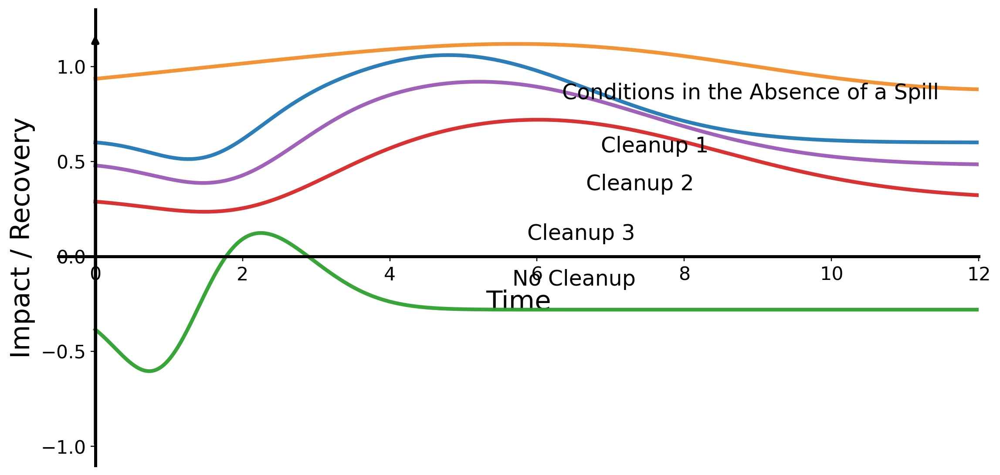

Top treatment: passive_sorbents
Utility: 6.5
Uncertainty: 0.22
Key drivers: high ecological sensitivity; heavy oil persistence; restricted operational access
Top treatment: passive_sorbents
Utility: 6.5
Uncertainty: 0.62
Key drivers: heavy oil persistence; penetration below surface
Top treatment: passive_sorbents
Utility: 6.5
Uncertainty: 0.63
Key drivers: high ecological sensitivity; heavy oil persistence; penetration below surface
Top treatment: natural_attenuation
Utility: 7.0
Uncertainty: 0.47
Key drivers: high wave exposure
Top treatment: passive_sorbents
Utility: 6.5
Uncertainty: 0.32
Key drivers: high ecological sensitivity; penetration below surface; restricted operational access
Top treatment: natural_attenuation
Utility: 7.0
Uncertainty: 0.45
Key drivers: high wave exposure